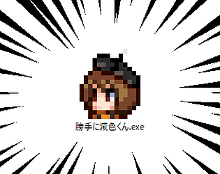

Log in with itch.io to leave a comment.
顔グラ16パターン全部埋めて作る場合、透過色を1色確保で減色してEDGEかなんかでパレット0番並び替えてみたいな面倒な作業が発生するわけだけど、これだと一発でやってくれるんだな。1つで済むのはすごく楽だ。
ところで最初に入れても動いてくれない時があったが、実行して常駐しないとダメなんですかね？なんか、導入時にセキュリティソフトにブロックされたみたいな挙動があって、それ絡みかもしれないけど。
クリスタのような256色カラーパレット出力に対応してない画像編集ソフトを使う時に特に便利ですねえ
常駐を前提としたアプリケーションです
ファイル操作を勝手に行う都合上、別途セキュリティソフトを入れてる場合は引っかかりやすいのかもしれないので適当に対応してやってください


Comments
顔グラ16パターン全部埋めて作る場合、透過色を1色確保で減色してEDGEかなんかでパレット0番並び替えてみたいな面倒な作業が発生するわけだけど、これだと一発でやってくれるんだな。1つで済むのはすごく楽だ。
ところで最初に入れても動いてくれない時があったが、実行して常駐しないとダメなんですかね？
なんか、導入時にセキュリティソフトにブロックされたみたいな挙動があって、それ絡みかもしれないけど。
クリスタのような256色カラーパレット出力に対応してない画像編集ソフトを使う時に特に便利ですねえ
常駐を前提としたアプリケーションです
ファイル操作を勝手に行う都合上、別途セキュリティソフトを入れてる場合は引っかかりやすいのかもしれないので適当に対応してやってください